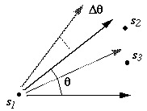

pairs()
- Description:
- Create a pairs object from a point object.
- Usage:
- pairs(point.obj,num.lags=10,type='isotropic', theta=0, dtheta=5, maxdist)
- Required arguments:
- point.obj: a point object generated by point()
- Optional arguments:
- num.lags: the number of lags into which to divide the pairs of
points in the pairs object. The lags are all of equal size.
- type: either 'isotropic' or 'anisotropic'. If 'isotropic' then all
nC2 possible pairs of points are represented in the pairs object. If
'anisotropic', then the arguments theta and dtheta are used to
determine which pairs of points to include.
- theta: an angle, measured in degrees from the horizontal x axis,
that determines pairs of points to be included in the pairs object (see
Notes below).
- dtheta: a tolerance angle, around theta, measured in degrees that
determines pairs of points to be included in the pairs object (see
Notes below).
- maxdist: the distance beyond which not to consider pairs
of points. A large number of spatial locations can cause
the pairs function to consume a considerable amount of computation
time. In most cases, spatial dependence can be adaquately
characterized without examining the entire spaital extent of the data
set.
- Value:
- A pairs object.
- Notes:
- When creating an anisotropic pairs object, the assumption is that
the direction, as well as the distance, between pairs of points is
important in describing the variation. Using the theta and
dtheta arguments, pairs of points that meet direction
requirements can be selected. A pair of points will be included when
the angle between the positive x axis and the vector formed by the
pair of points falls within the tolerance angle given by
(theta-dtheta,theta+dtheta).
For example, in the figure below the pair (s1,s2) would be included
in the pairs object, but th remaining pairs, (s1,s3), (s2,s1),
(s2,s3), (s3,s2) and (s3,s1), would not be.

- Examples:
- stations.prs <- pairs(stations,15)
- stations25.prs <- pairs(stations,type='anisotropic',theta=25)
majure